Lesson content · 课文
Lesson 36: Where ...? · ……在哪里？
Listen and answer the questions. 听录音并回答问题。
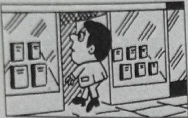
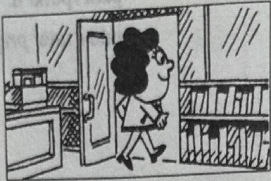
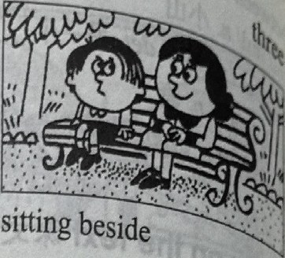
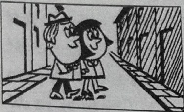
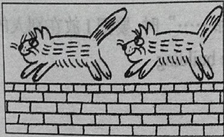
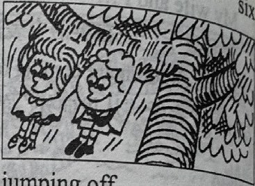
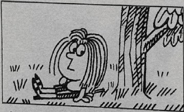
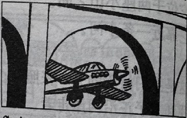
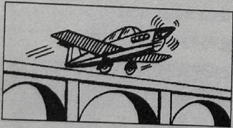
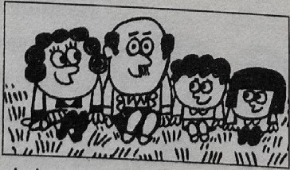
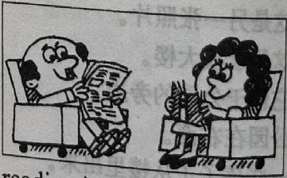
New words and expressions · 生词和短语
| Word · 单词 | Pronunciation · 音标 | Meaning · 词义 |
|---|---|---|
| beside | /bɪˈsaɪd/ | prep. 在……旁 |
| off | /ɒf/ | prep. 离开 |
Practice · 课文练习
Written exercises · 书面练习
A. Complete these sentences · 现在进行时
Complete these sentences. 模仿例句用现在进行时完成以下句子。
注意：如果单音节动词仅有一个元音字母而其后跟一个辅音字母时，变成现在分词时要将此辅音字母双写。
Example · 例句
put — putting
Put … He is putting on his coat.
-
textbook: A. Complete these sentences · 现在进行时 — swim … He is ____ across the river.
-
textbook: A. Complete these sentences · 现在进行时 — sit … She is ____ on the grass.
-
textbook: A. Complete these sentences · 现在进行时 — run … The cat is ____ along the wall.
B. Write sentences · 提问并回答
Write sentences using these words. 模仿例句提问并回答。
Example · 例句
boy swimming / across the river
Where is the boy swimming? He’s swimming across the river.
children going / into the park
Where are the children going? They’re going into the park.
-
textbook: B. Write sentences · 提问并回答 — man going / into the shop
-
textbook: B. Write sentences · 提问并回答 — woman going / out of the shop
-
textbook: B. Write sentences · 提问并回答 — he sitting / beside his mother
-
textbook: B. Write sentences · 提问并回答 — they walking / across the street
-
textbook: B. Write sentences · 提问并回答 — the cats running / along the wall
-
textbook: B. Write sentences · 提问并回答 — the children jumping / off the branch
-
textbook: B. Write sentences · 提问并回答 — man standing / between two policemen
-
textbook: B. Write sentences · 提问并回答 — she sitting / near the tree
-
textbook: B. Write sentences · 提问并回答 — it flying / under the bridge
-
textbook: B. Write sentences · 提问并回答 — the aeroplane flying / over the bridge
-
textbook: B. Write sentences · 提问并回答 — they sitting / on the grass
-
textbook: B. Write sentences · 提问并回答 — the man and the woman reading / in the living room
Practice worksheet · 配套练习
A. Questions
Write questions with Where and answer them. 用 Where …? 的句式写出表示现在状态的疑问句。
Example · 例句
Where is the postman going? — He’s going to our friends’ house.
-
worksheet: A. Questions — Where / women / sit? — they / in the park
-
worksheet: A. Questions — Where / Anna / read her book? — she / in the living room
-
worksheet: A. Questions — Where / men / shave? — they / in the bathroom
B. Short forms
Rewrite using short forms. 用缩写形式抄写以下句子。
Example · 例句
She is typing some letters. → She’s typing some letters.
-
worksheet: B. Short forms — They are shaving.
-
worksheet: B. Short forms — Sally is coming out of the shop.
-
worksheet: B. Short forms — The sun is shining.
-
worksheet: B. Short forms — They are looking at the boats.
-
worksheet: B. Short forms — It is a fine day today.
C. About you
Answer about yourself. 根据你自己的情况回答以下问题。
-
worksheet: C. About you — Where are you now?
-
worksheet: C. About you — Where are you sitting?
-
worksheet: C. About you — What are you doing? (Are you doing your homework?)
-
worksheet: C. About you — What is another person in your family doing?
Original images · 原图对照
Expand a page to compare it with the transcription. Open the original in a new tab to zoom in.
展开原图核对文字，也可以在新标签页打开原图放大查看。
Lesson text and oral practice · 课文与口头练习
Open original · 打开原图 ↗ Download original · 下载原图

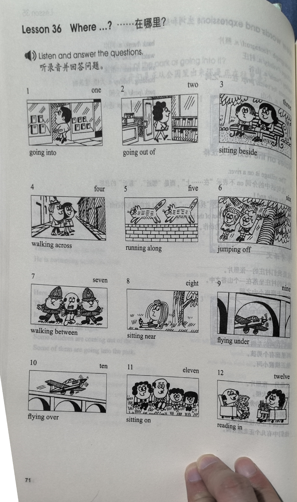
Vocabulary, notes and written exercises · 生词、注释与书面练习
Open original · 打开原图 ↗ Download original · 下载原图

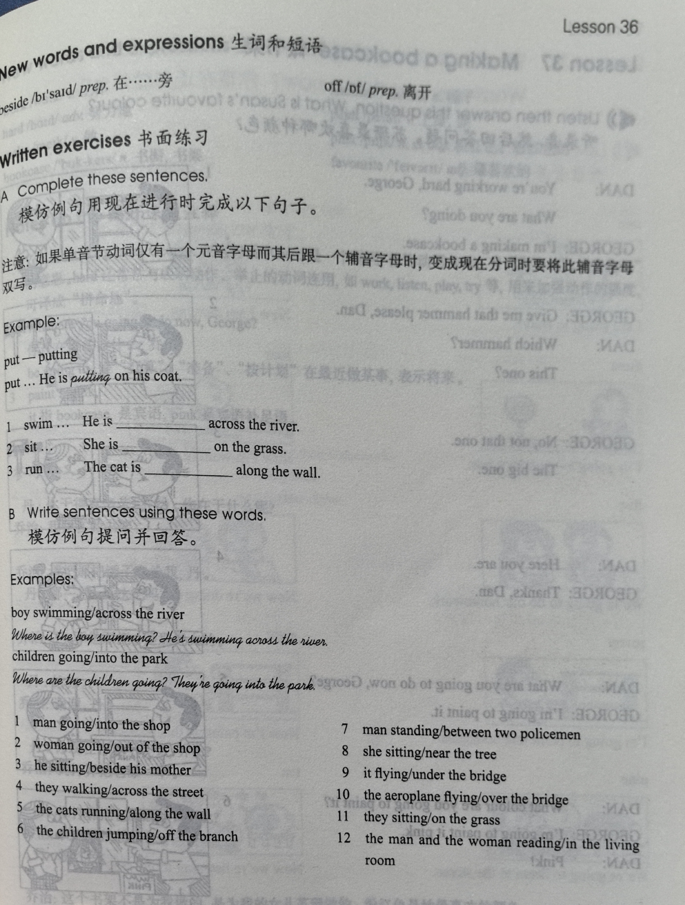

Grammar practice · 语法练习
I. Fill in the blanks with some or any
- There are ___ old men in the park. ___ are standing under trees; ___ are sitting on chairs.
- Do you know ___ people here?
- ___ children are playing on the sand; ___ are looking at the birds.
- English people speak English, but ___ speak French.
- There isn't ___ cheese left in the fridge.
- ___ birds are flying over the bridge.
- There aren't ___ villages in that valley.
- Are there ___ children in the park?
II. Fill in the blanks with beside, between, on, along, or out of
- Come and sit down ___ me under this tree.
- In this photograph, the park is ___ the left and the school building is ___ the right.
- Our village is in a valley ___ two big hills.
- His small house is ___ Mr. Smith's and Mrs. White's.
- Put your umbrella ___ my shoes near the door.
- They're walking ___ the street in the village.
- The children are sitting ___ the grass. It's wet!
- Mrs. Green is coming ___ the shop with a loaf of bread.
- In this photograph, I am standing ___ my father and my mother.
- Where's my blue pen?
It's ___ your desk ___ those letters. And where's my red pencil? It's ___ your computer. And where are those new photographs? They're ___ your bed.
Your notes and answers
Use this space for longer responses or exercises that do not have an individual answer box.